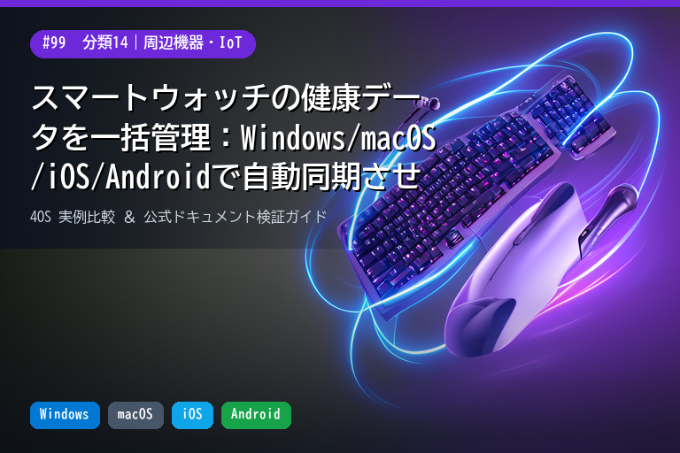

#99｜分類14: ハードウェア・周辺機器・IoT連携 2026-11-28

スマートウォッチの健康データを一括管理：Windows/macOS/iOS/Androidで自動同期させる方法
「スマートウォッチを購入したけれど、PCやスマホでデータを確認する際にOSごとに操作がバラバラで混乱する」「特定のOSでは同期がうまくいかないことがある」といった悩みをお持ちではありませんか？
スマートウォッチは非常に便利なデバイスですが、その健康データをいかにスムーズに各OSへ統合し、一元管理できるかが利便性を左右する大きなポイントです。実は、OSによって「標準機能」でどこまでできるのかには明確な差があります。
この記事では、Windows、macOS、iOS、Androidの4つの主要OSにおいて、スマートウォッチの健康データを同期・管理するための実例手順と、スムーズな運用を実現するためのコツを徹底解説します。
4OS比較早見表
| OS | 標準機能でのデータ可視化 | 同期方法の基本 | 特徴・注意点 |
|---|---|---|---|
| Windows 11 | 不可（アプリ必須） | Bluetooth接続 ＋ 公式アプリ | クラウド連携によりPCでの閲覧が可能 |
| macOS | 不可（アプリ必須） | Bluetooth接続 ＋ 公式アプリ | Apple Healthとの連携は機種に依存 |
| iOS | 可能（ヘルスアプリ） | Bluetooth接続 ＋ 公式アプリ | Apple Watch以外は自動書き込みに制限あり |
| Android | 可能（Google Fit等） | Bluetooth接続 ＋ 公式アプリ | 機種により設定メニューの階層が異なる |
1. Windows 11 での実例手順
Windows環境では、OS自体が健康データを管理する仕組みを持っていません。そのため、Bluetoothでペアリングしただけでは「デバイスとして認識される」だけであり、心拍数や歩数をグラフ化するにはメーカーの公式アプリを介在させる必要があります。
【準備】
* PCにBluetoothモジュールがあること（ない場合はUSB-Cドッキングステーション等に接続するBluetoothアダプターを用意）。
【接続ステップ】
1. 「設定」>「Bluetooth とその他のデバイス」>「デバイスの追加」を開きます。
2. スマートウォッチをペアリングモードにします。「PC に新しい Bluetooth デバイスが見つかりません」と表示された場合は、一度Bluetoothをオフにしてから再度検索を実行してください（Microsoftサポート推奨手順）。
3. Microsoft Store等からメーカー公式アプリ（Garmin Connect, Fitbitなど）をインストールし、ログインして同期を行います。
【標準機能の制限事項】
* OS単体では心拍数や歩数をグラフ表示することはできません。
* アプリによるデータ保存はローカルストレージのみとなることが多いため、クラウドバックアップを利用するには必ず公式アプリでのアカウント連携が必要です。
2. macOS での実例手順
macOSもWindowsと同様に、Bluetoothデバイスとしての接続はスムーズですが、標準のシステムUIで詳細な健康データを管理する機能は備わっていません。
【準備】
* 内蔵Bluetoothモジュール（macOS Ventura以降）または外部アダプター。
【接続ステップ】
1. 「システム設定」>「Bluetooth」を開きます。
2. リストに表示されたペアリング対象のデバイスを選択し、パスワード入力画面が出たら承認します。
3. App Storeからメーカー公式アプリをダウンロード・インストールし、同期ボタンを押します。
【標準機能の制限事項】
* OSレベルでの詳細な健康データ管理UIは存在しません。
* Apple Watch以外のデバイスを使用している場合、セキュリティポリシーにより「ヘルス」アプリへの自動書き込みが非公式または不可能なケースが多い点に注意が必要です。
3. iOS（iPhone / iPad）での実例手順
iOSはスマートウォッチとの親和性が最も高いOSですが、Apple Watch以外のメーカー製デバイスを接続する場合、いくつかの制約が発生します。
【準備】
* Bluetoothをオンにし、iPhoneをウォッチの近くに配置します。
【接続ステップ】
1. 「設定」>「Bluetooth」からペアリングを行うか、メーカー公式アプリ内の初期セットアップガイドに従います。
2. アプリ内で「Apple Health（ヘルス）」とデータを共有する項目を選択し、許可を与えます。
【標準機能の制限事項】
* iPadのみでの利用の場合、一部の高級スマートウォッチとの完全な同期にはiPhoneを介在させる必要がある場合があります（メーカー仕様に依存）。
* Apple Watch以外のデバイスでは、「ヘルス」アプリへのデータ転送が自動で行われないケースが多く、公式アプリの常駐が必要です。
4. Android での実例手順
Androidは自由度が高い反面、機種やOSバージョンによって設定メニューの階層が異なるため、正確な操作手順の確認が重要です。
【準備】
* Bluetoothおよび位置情報サービス（GPS）をオンにします。
【接続ステップ】
1. 「設定」>「Bluetooth」を開き、ペアリング可能なデバイスを探してタップします。「このデバイスをペアリングしますか？」と表示されたら承認します。
2. Google Playストアからメーカー公式アプリをインストールし、初期セットアップを行います（Samsung Galaxy Watchの場合はWearableアプリ経由など）。
【標準機能の制限事項】
* Androidバージョンや機種によって「設定」メニュー内の階層が異なるため、操作に戸惑うことがあります。
* 一部のスマートウォッチは特定のAndroid OSベースのみ対応しており、汎用アプリでの管理に制限がある場合があります。
よくあるトラブルと解決チェックリスト
運用中に発生しやすいエラーの原因と対処法をまとめました。
トラブル #1: 「ペアリングできない」「接続が切れる」
- 原因: Bluetoothサービスの不応答、電波干渉、または認証トークンの破損。
- 解決策 (全OS共通): 一度「設定」>「Bluetooth」からデバイスを削除（アンペアリング）し、端末とウォッチの両方を再起動してから再度接続を試みてください。
- Windows固有: Microsoftサポートガイドに従い、「デバイスとプリンター」のBluetoothドライバーを再インストールしてください。
トラブル #2: 「健康データが同期されない・更新されない」
- 原因: アプリのバックグラウンド実行制限（バッテリー最適化）、または権限不足。
- 解決策 (全OS共通): 公式アプリの設定から「自動同期」を有効にし、通知許可と位置情報アクセスを確認してください。
- iOS/Android: 端末設定で該当アプリの「背景活動」や「ローカルフォーグラウンド実行」が制限されていないか確認してください（iOSではバッテリー最適化対象外に設定）。
トラブル #3: 「USB-C ドッキングステーション経由での接続エラー」
- 原因: 有線接続時のプロトコル不整合、またはドックの電力供給不足。
- 解決策 (Windows/macOS): スマートウォッチはPCと直接Bluetoothでペアリングし直してください（有線は充電用としてのみ利用）。ドッキングステーションとケーブルを変えて試すか、PCの電源サイクル再起動を行ってください。
トラブル #4: 「KVM 切替器使用中に接続が途絶える」
- 原因: KVMがBluetoothデバイスのシグナルを中継できないため（Bluetoothは有線経由での転送不可）。
- 解決策 (Windows/macOS): スマートウォッチのペアリングは、KVMを使用していないPC側で直接行ってください。Windowsの場合、「設定」>「デバイス」から正しいアダプターが認識されているか確認してください。
まとめ：快適なマルチOS環境を作るポイント
スマートウォッチの健康データを一括管理する上で最も重要なのは、「各OSの標準機能に頼りすぎず、メーカー公式アプリをハブ（中心）として活用する」ことです。
WindowsやmacOSユーザーは、PC単体でのデータ表示にこだわらず、公式アプリを通じてクラウドへデータを永続化させるのが正解です。一方でiOSやAndroidユーザーは、スマホとのシームレスな連携を活かしつつ、バックグラウンド動作の権限設定を正しく行うことで、ストレスのない同期環境を構築できます。
また、快適なマルチOS環境を構築する上では、周辺機器の選び方も重要です。
* USB-C ドッキングステーション: 複数のデバイスを接続する際、電力供給とデータ転送を安定させるために必須です。
* KVM切替器: PCとMacを切り替えて使う場合、キーボードやマウスの操作を一元化できますが、Bluetooth機器との相性を考慮したモデル選びが重要です。
* マルチペアリングキーボード・マウス: OS間を頻繁に行き来するなら、ボタン一つで接続先を切り替えられる製品を導入することで、スマートウォッチのデータ確認もよりスムーズなワークフローへと進化します。
正しい設定と最適な周辺機器の組み合わせで、あなたの健康管理をよりスマートにアップデートしましょう。
参考文献・公式ドキュメント（一次情報ソース）
本記事の手順・仕様は以下の各OSおよびツールの公式ドキュメントに基づいています。OSアップデートによりメニュー名称や挙動が変わる場合があるため、最新仕様の確認にもご活用ください。